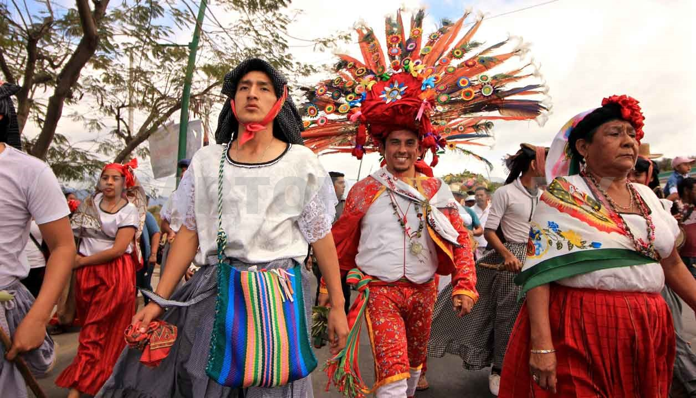
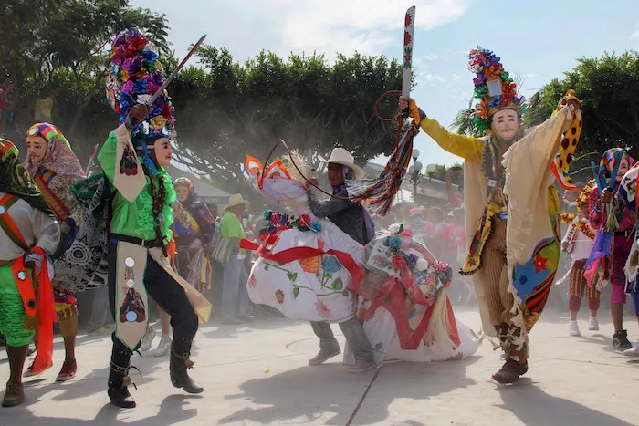

Zoques

Los Zoques, Tzoque, Soque o simplemente Zoc, son un grupo de indígenas que se encuentran actualmente en territorio mexicano. La mayor parte se ubica en el estado de Chiapas. Principalmente en los municipios de Copainalá, Coapilla, Tapalapa, Ocotepec, Francisco León, Ostuacán, Chapultenango, Solosuchiapa y Amatán
El vestido típico del hombre Zoque es la camisa manga larga y pantalón de manta blanca, ambos holgados. Complementan su vestimenta con un cinturón de colores, un pañuelo atado al cuello, sombrero plano de zacate y sandalias de cuero o caites. En algunas zonas, el traje tradicional lleva un pantalón de gamuza color marrón sobre el calzón blanco.
Por su parte, el traje típico de las mujeres es el huipil blanco corto tejido por ellas mismas y una blusa del mismo color, los cuales suelen bordar o colocar encajes en la zona del cuello y mangas. Es común el uso de faldas largas elaboradas con popelina en diversos colores.

Sus creencias religiosas ancestrales están relacionas con el culto al Sol. Su Dios principal y otros seres espirituales relacionados con la montaña, el viento, la lluvia, el relámpago y demás elementos de la naturaleza.
Igualmente creen en la existencia de seres espirituales malvados que se pueden encarnar en los animales y también apropiarse del alma de los hombres a través del sueño o incluso una caída.
La influencia de otras religiones ha captado la atención de muchos zoques que, aunque conservan sus creencias antiguas, las han fusionado con nuevos actos de fe y nuevos personajes, entre ellos Jesucristo, personaje de la cristiandad que ellos asocian con el Dios Sol.

Las comunidades Zoque celebran todas las fechas del calendario católico dándole el toque ancestral a cada una de ellas con sus danzas tradicionales. Por ejemplo, el Baile al Padre Sol es una demostración de agradecimiento y una petición por la prosperidad del pueblo.
La danza del caballito también es un baile tradicional que representa su lucha contra los colonizadores y también es realizada durante sus festividades. Entre las celebraciones más importantes están la del día de su santo patrono, protector de la comunidad.

Esta festividad es realizada el día que corresponde al santo según la iglesia católica, y su realización implica una gran organización con antelación de parte de un grupo de ellos, cuyos cargos son elegidos por la comunidad cada año.
 Otras fiestas populares son las del día de los muertos, en la que construyen altares para venerar sus muertos con comidas y bebidas típicas, la navidad, el carnaval y la semana santa, dia de la candelaria, entre otros.
Otras fiestas populares son las del día de los muertos, en la que construyen altares para venerar sus muertos con comidas y bebidas típicas, la navidad, el carnaval y la semana santa, dia de la candelaria, entre otros.
Otras fiestas populares son las del día de los muertos, en la que construyen altares para venerar sus muertos con comidas y bebidas típicas, la navidad, el carnaval y la semana santa, dia de la candelaria, entre otros.